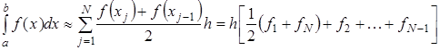

Метод трапеций
Если на частичном отрезке  подынтегральную функцию заменить полиномом Лагранжа первой степени:
подынтегральную функцию заменить полиномом Лагранжа первой степени:
то искомый интеграл на частичном отрезке запишется следующим образом:
Тогда составная формула трапеций на всем отрезке интегрирования [a,b] примет вид:
Графически метод трапеций представлен на рис. 1. Площадь криволинейной трапеции заменяется площадью многоугольника, составленного из N трапеций, при этом кривая заменяется вписанной в нее ломаной. На каждом из частичных отрезков функция аппроксимируется прямой, проходящей через конечные значения, при этом площадь трапеции на каждом отрезке определяется по формуле (1).
Погрешность метода трапеций выше, чем у метода средних прямоугольников. Однако на практике найти среднее значение на элементарном интервале можно только у функций, заданных аналитически (а не таблично), поэтому использовать метод средних прямоугольников удается далеко не всегда.
 Рис. 1. Интегрирование методом методом трапеций
Рис. 1. Интегрирование методом методом трапеций